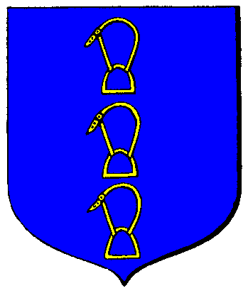

| Übersicht,
Anschläge und Stammtisch (RPG) |
|
Ultimatum an den Larja Konvent
|
| Falster von Distelflamme (RIP) |
Wertes Scherbenvolk,
werter Konvent der edlen Waldgöttin,
ich habe keinerlei Interesse an langen Diskussionen oder umfangreichem Gerede.
Daher verkünde ich euch, die ihr den Konvent Larjas vertretet nun den Beschluss des Haines!
Vernehmt mein königliches Urteil!
Zu Unrecht wurde mein getreuer Gefolgsmann lenge als Ketzer veruteilt!
Kein Leid fügte er den Wichteln zu!
Zu Unrecht wurden andere aus meinem Gefolge belangt!
Truppen unter dem Banner des Larja Konventes marodieren im Hain ohne das ihnen dies Gestattet wurde.
Daher sei von euch gefordert,
sprecht mein Gefolge frei vom Urteil der Ketzerei!
Zieht eure Truppen aus dem Hain ab!
Sollten weiterhin Teile meines Gefolges zu unrecht von euch angegangen werden,
und sollten nach Ablauf des Ultimatums noch weiter Truppen unter der Flagge des Larja Konventes im Hain erspäht werden,
dann wird dies als Kriegerischer Akt gegen die Laoch d´Orchadas und gegen den Hain gewertet!
Ohne jedes Zögern wird der Krieg dann vergolten!
Das Ultimatum die Verurteilten frei zu sprechen und die Truppen abzuziehen dauert 24 Stunden((RL)) an!
Im weiteren ergeht ein Landverbot für Larjagläubige für den Hain,
Ausnahmen können durch den Hüter des Haines gestattet werden!
Das Landverbot wird nach Erfüllung der Forderungen durch den Larja Konvent automatisch nichtig.
König Falster von Distelflamme,
Vorsteher von Aerlinn,
Anführer der glorreichen Nation "Laoch d´Orchadas",
Guth an Curadh,
Ehemann der reizenden Tira Lu von Distelflamme
Zur 7. Stunde am 64.Dunkelfrost im Jahre 420 |
01.07.05 0:12
 |
|
| Rollblack (RIP) |
So steht es geschrieben, so wird es das Königshaus auch vollziehen, mögen die Larjaner eine Weise entscheidung treffen.....
Markgraf Rollblack,
Vorsteher von Kratos,
Anführer der glorreichen Nation "Der Kreis"
Zur 7. Stunde am 64.Dunkelfrost im Jahre 420 |
01.07.05 0:15
|
|
| Biba Butzemann (RIP) |
So steht es geschrieben und so wird es sein!
Auf zu blutig morden Grimmetaten. Mögen die Larjaner durch kalten gerechten Stahl lernen dass Willkür nicht geduldet wird.
Sir Thor von Asgard
Zur 7. Stunde am 64.Dunkelfrost im Jahre 420 |
01.07.05 0:21
|
|
| Nathan von Xanthias (RIP) |
FÜR UNSEREN KÖNIG, FÜR DIE FREIHEIT.
Nathan der Weise,
Atheistischer Freiheitskämpfer
Zur 7. Stunde am 64.Dunkelfrost im Jahre 420 |
01.07.05 0:23
|
|
| Ithildûath Elenath (RIP) |
Zu unrecht? <schmunzelt und tritt nur kurz aus der Menge der personen hervor> ich sah ihn mehrmals auf den Plätzen der Wichtel und mein neugieriges Händlerauge, sah ihm immer mit einer Menge Thaum von dannen ziehen..... aber natürlich wollte er sicherlich nur Bäume kürzen gehen, die zu jenem Zeitpunkt schon seit einigen Tagen dezemiert waren.... < schüttelt den kopf und taucht in der Menge unter> und die verletzungen die ich bei den Wichteln sah, waren Einbildung...lang lebe der weise König <er ward verschwunden>
Ithildûath Elenath
Zur 8. Stunde am 64.Dunkelfrost im Jahre 420 |
01.07.05 0:31
|
|
| Pechtrabba (RIP) |
und der so arme unschuldige Chromwell ist gestolpert und hat im Fallen gleich mehrere Dutzend Glaubenskrieger erschlagen..
Fehlt da noch jemand ?
Pechtrabba,
Hohepriesterin im Dienste des einzig wahren Glaubens an Larja
Zur 13. Stunde am 64.Dunkelfrost im Jahre 420 |
01.07.05 1:44
|
|
| Cwlvyn ab Dhwron (RIP) |
"FÜR UNSEREN KÖNIG, FÜR DIE FREIHEIT."
Ich hab noch nie sowas lächerliches gehört ...
Ich mein, das ist doch ein Widerspruch in sich ..
und ja ... n paar Laochs sah ich da auch immer wieder ...
Sir Amorous Meara
Zur 21. Stunde am 64.Dunkelfrost im Jahre 420 |
01.07.05 3:33
|
|
upolein
  |
Jo Amorous - der König scheint Freunde und Anhänger zu haben... - solltet Ihr mal drüber Nachdenken...
---
24 Stunden iss ne geforderte Rekordzeit für Konvente wehrter König :-)
*lachend das Anschlagbrett verlässt*
upolein
Zur 3. Stunde am 65.Dunkelfrost im Jahre 420 |
01.07.05 4:58
|
|
| Biba Butzemann (RIP) |
Pechtrabba:
Chromwell hat den Hain gegen die unzivilisierten, marodierenden Horden des Larjakonventes verteidigt.
Die in ihrer Dummheit, Gewaltbereitschaft und Zerstörungswut wahllos Gebäude beschädigten, beschmierten und alle Reisenden gewaltsam aufhielten, und sie brutal verhörten ob sie denn auf wirklich keine Ketzer wären.
Sir Thor von Asgard
Zur 6. Stunde am 66.Dunkelfrost im Jahre 420 |
01.07.05 11:16
|
|
| Eldjárn von Kazaana (RIP) |
Da sieht man mal was passiert wenn ein Konvent nicht das macht was einem die weltlichen Machthaber vorschreiben...
Eldjárn Ívi Ejolfsson,
Atheistischer Freiheitskämpfer,
Schlingelchen
Zur 14. Stunde am 66.Dunkelfrost im Jahre 420 |
01.07.05 13:04
|
|
Slam ODR
  |
Nein, da sieht man mal das es auch Leute gibt die sich nicht der Willkür des Larjakonvents beugen und sich wehren. :->
Slam ODR,
Hohepriester im Dienste des einzig wahren Glaubens an Pheron
Zur 16. Stunde am 66.Dunkelfrost im Jahre 420 |
01.07.05 13:38
|
|
| Fiorel Quelleloss (RIP) |
Ist aber halt nur so wenn der weltliche Herr auch stark genug ist seinen Willen durchzusetzen ... mal sehen ob man dem König nun auch ein Ultimatum stellt oder ob man einwilligt
Sir Rannug Mc Duck
Zur 16. Stunde am 66.Dunkelfrost im Jahre 420 |
01.07.05 13:39
|
|
| Itto Ogami (RIP) |
Wenn sich da kein Investiturstreit anbahnt, bzw. nicht schon ausgebrochen ist.
Sir Drake,
Kardinal im Dienste des einzig wahren Glaubens an Urvan
Zur 21. Stunde am 66.Dunkelfrost im Jahre 420 |
01.07.05 14:42
|
|
| Alexa (RIP) |
Ich sehe es genau wie Slam ODR.
Alexa
Zur 4. Stunde am 67.Dunkelfrost im Jahre 420 |
01.07.05 16:21
|
|
| Jandra Calanór (RIP) |
Verstehe ich das richtig, werter Falster von Distelflamme, daß ein jeder Larjagläubige Landverbot hat?Also auch welche, die sich einem mutigen Recken angeschlossen haben?Welche, die man Gefährten nennt?
Jandra
Zur 6. Stunde am 67.Dunkelfrost im Jahre 420 |
01.07.05 16:52
|
|
| Dimiona Reshemin von Borbra (RIP) |
Ich bin sicher, der König meint es genauso wie der Fürst Xolgrim.
Der bezieht das Landverbot auf die Mitglieder des Larjakonvents oder ihre direkten Beauftragten.
Eure Gefährten werden für sich selbst entscheiden müssen ob sie mit euch Länder unter Larjabann betreten oder nicht.
Lady Dimiona béliar von Borbra,
Ehefrau des ehrenwerten elendril béliar,
Geschäftsbereich: Diplomatie und Rache für Bethana
Zur 8. Stunde am 67.Dunkelfrost im Jahre 420 |
01.07.05 17:18
|
|
| Carnifex Maximus (RIP) |
Nun, unabhängig davon, welcher Seite ich mich zurechne, oder ich zugerechnet werde, ist es eine Anmaßung ohne Gleichen, ein Gottesurteil als Unrecht zu bezeichnen!
Damit stellt Ihr das Konzept der Konvente und der Kirchen an sich in Frage, König Falster!
Ich weiss nicht, ob die Götter dies so hinnehmen werden.
Davon abgesehen ist es natürlich Eurer gutes Recht, auf Eurem Lande zu tun und zu lassen, was Ihr für richtig haltet, doch seid Euch gewiss, dass diese Entscheidung auch auf weltlicher Ebene mehr kosten kann, als Ihr Euch vielleicht erhofft!
Sir Carnifex Maximus
Zur 9. Stunde am 67.Dunkelfrost im Jahre 420 |
01.07.05 17:34
|
|
| Noemi Duval (RIP) |
na, ein konvent den du nicht für deine weltlichen zwecke missbrauchen kannst könig? ... nunja, pech gehabt, aber anscheinend kann man sich mit gold doch nicht alles erkaufen ...
Baronesse Noemi Duval
Zur 12. Stunde am 67.Dunkelfrost im Jahre 420 |
01.07.05 18:11
|
|
| Rhenaya (RIP) |
fehlt doch nur noch das ein jäger aus dem hain zum propheten larjas ernannt wird, oder gleich zwei.
Rhenaya,
Atheistische Freiheitskämpferin
Zur 12. Stunde am 67.Dunkelfrost im Jahre 420 |
01.07.05 18:20
|
|
Übersicht,
Anschläge und Stammtisch (RPG)
|